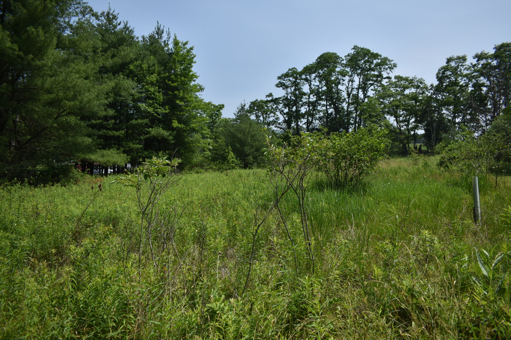
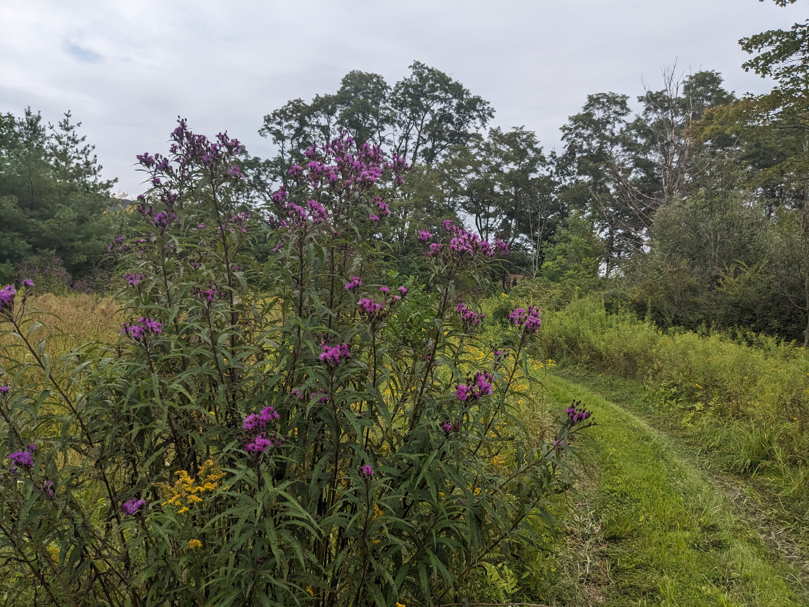
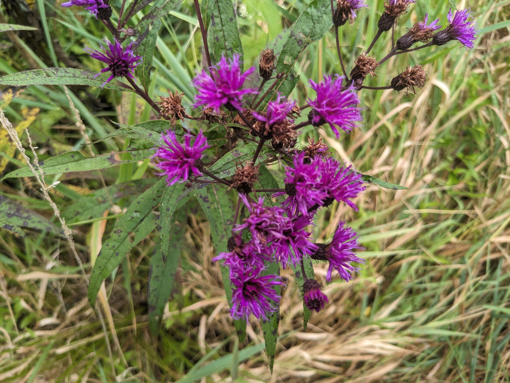

Concept
The Wet Meadow is a small area - barely an acre - but one of Chicorylane's most extraordinary. It lies on a slight upslope just East of and a few feet above the Calamus Marsh and extends up to the Grassland. It is composed of the same Millheim Silt Loan soil that underlies the streams crossing the property and typically oozes ground water that keeps the area moist 2-3 months a year. It provides ideal conditions for several notable moisture-loving species including Blue Vervain, Monkey Flower, Sensitive Fern, and most notable, New Your Ironweed. This plant is spectacular most of August. There are several hundred 7-foot stalks of masses of luminous purple blossoms that sparkle in the light on a clear-air day. Over the years we have diligently removed Loosestrive, Teasels, and other invasives so that today, we view the Meadow as an area that should just be left alone, except for occasional light maintenance. Whereas for most of the farm we are seeking to enhance its ecology, this area is just fine as it is. We'll continue to plant a few compatible shrubs on its periphery to increase its sense of privacy and encourage contemplation, but it is just fine as it is.Steps
- Select a site
- The segment of the wetland noted above, selected (complete)
- Record it
- Plan
- Species whose numbers could be increased
- Species whose numbes could be decreased
- Species not currently pesent whose introduction could be beneficial
- Plant Palettes
- Planting Map
- Implement
- Sequence of actions
- Resources needed not currently available
- Timeline
- Assess
- Narrative
- Data
- Notes